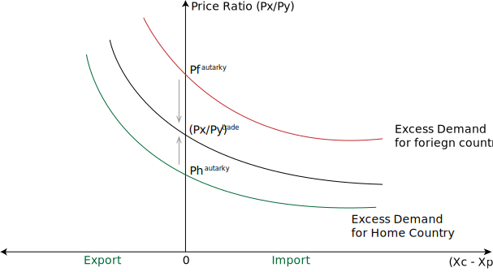

- Px is higher in foreign country than home country.
- Therefore to take advantage of the higher price home country will export Good X.
- Price of Good X in home will rise and price of Good Y in foreign will fall.
- Value of Exports of home country = Value of imports of foreign country
The substance here is that difference in autarky prices is the key factor that determines the patterns of trade.